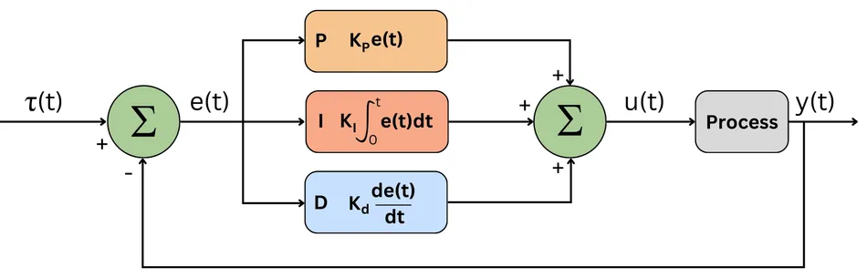
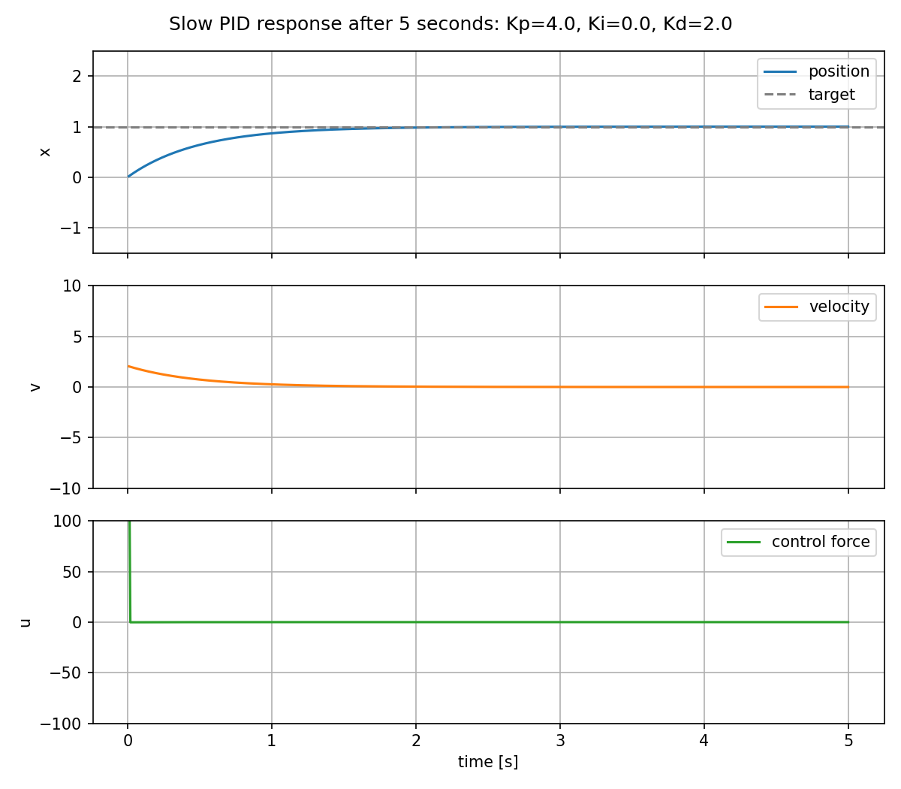
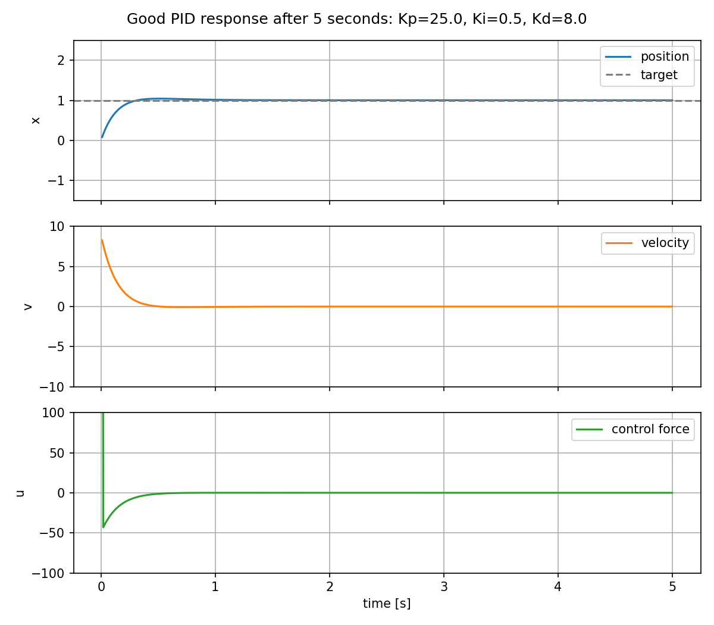
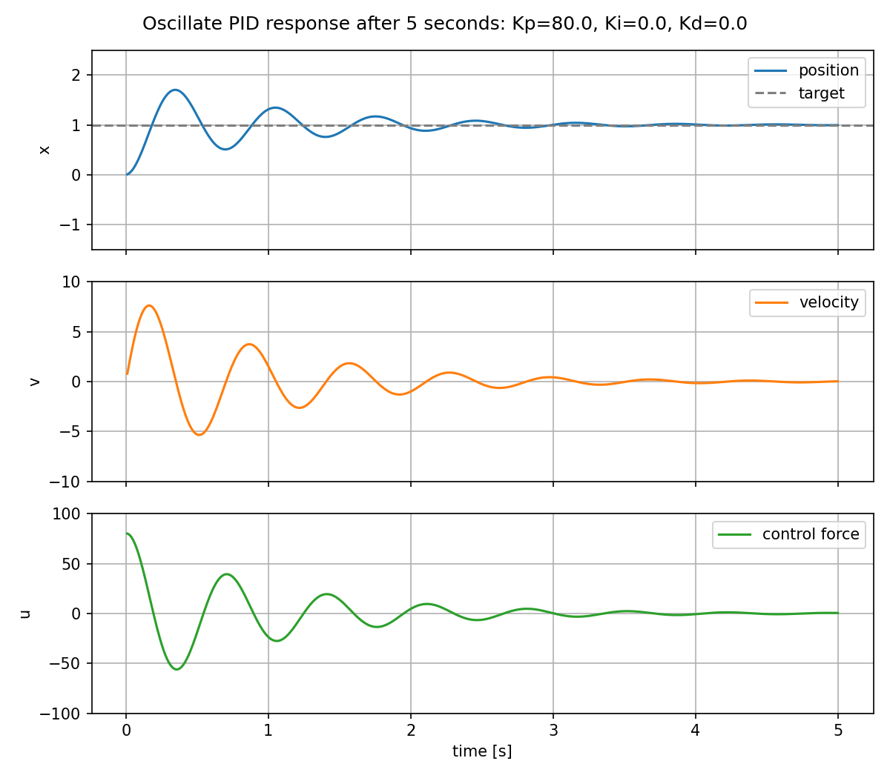

PID Control
What is PID control
PID is a feedback controller. It measures the current system output, compares it to a target, and creates a control command from the error.

Role of P, I, and D
P: proportional term
The proportional term reacts to the current error.
If the position is far from the target, the error is large, so the controller
applies a large force. Increasing Kp usually makes the system respond faster.
If Kp is too high, the mass can overshoot the target and oscillate.
I: integral term
The integral term reacts to accumulated error over time.
This helps remove steady-state error. For example, if friction or a constant disturbance prevents the system from reaching the target exactly, the integral term slowly grows until the controller applies enough extra force.
Too much Ki can make the response overshoot, oscillate, or recover slowly
because the accumulated error keeps pushing even after the system reaches the
target.
D: derivative term
The derivative term reacts to how quickly the error is changing.
This acts like damping. It reduces overshoot by pushing against fast changes in
error. Increasing Kd can make the response smoother and more stable.
Too much Kd can make the controller sensitive to measurement noise and can
make the control command jumpy.
More on PID Control
Demo
In the demo code, the target is the desired position:
The measured value is the mass position:
The controller computes the force applied to the mass:
Inside PIDController.compute(), the control law is:
That means:
The plant in this example is a simple mass with friction:
So the PID controller is not directly setting the position. It applies a force, the force changes acceleration, acceleration changes velocity, and velocity changes position.
Demo presets
Run the interactive demo:
The demo has sliders for Kp, Ki, and Kd, plus three preset buttons:
| Preset | Gains | Expected response |
|---|---|---|
Slow |
Kp=4.0, Ki=0.0, Kd=2.0 |
The position moves toward the target slowly. It is stable, but takes more time to settle. |
Good |
Kp=25.0, Ki=0.5, Kd=8.0 |
The position reaches the target quickly with limited overshoot. |
Oscillate |
Kp=80.0, Ki=0.0, Kd=0.0 |
The high proportional gain pushes hard with no damping, so the mass overshoots and oscillates. |
Slow response

Good response

Oscillating response

Use Start to run the simulation and Reset to clear the plot. When you press a
preset button, the sliders are updated and the simulation is reset so the new
response starts from the same initial state.
Look at the three plots:
position: how close the mass is to the target.velocity: how fast the mass is moving.control force: how hard the PID controller is pushing.
The goal is not always the fastest response. A useful PID tuning usually balances rise time, overshoot, settling time, and control effort.
PID terms and tuning tricks to learn
Basic words:
- Setpoint: the target value the controller is trying to reach.
- Process variable: the measured value from the system, such as position, speed, temperature, or pressure.
- Error: the difference between the setpoint and the process variable.
- Rise time: how long the system takes to move close to the target after a change in setpoint.
- Overshoot: how far the response goes past the target before coming back.
- Settling time: how long the system takes to stay near the target without large oscillations.
- Steady-state error: the remaining error after the system has mostly settled.
- Control effort: how much actuator force, torque, voltage, or command the controller uses.
- Saturation: when the actuator reaches its limit and cannot apply a larger command.
Practical PID tricks:
- Integral windup: accumulated integral error that keeps pushing the system even after the actuator saturates or the target is reached.
- Anti-windup: a technique that limits or resets the integral term when it would make recovery worse.
- Integral clamp: limiting the stored integral value so
Kicannot dominate the controller after a long error. - Conditional integration: only accumulating the integral term when the actuator is not saturated, or when the integral is helping move out of saturation.
- Integral deadband: stopping or reducing integral accumulation when the error is already very small, so the controller does not hunt around the target.
- Integral reset: clearing the integral term when the controller mode, target, or operating state changes.
- Integrator preload: starting the integral term near the command needed for a known operating point, instead of always starting from zero.
- Derivative kick: a sharp spike in the derivative term caused by a sudden setpoint change.
- Derivative on measurement: computing
Dfrom the measured output instead of the error, often written asD = -Kd * dy / dt, to reduce derivative kick. - Derivative on output: another name for derivative on measurement; it uses how fast the plant output is moving instead of how fast the error changes.
- Derivative filtering: smoothing the derivative term so measurement noise does not create a jumpy control command.
- Low-pass sensor filtering: filtering the measured value before the PID calculation when the sensor is noisy.
- Setpoint weighting: letting the proportional and derivative terms react less aggressively to setpoint changes while still correcting disturbances.
- Feed-forward: adding a predicted control command before feedback correction, such as the force needed to hold a known load.
- Gravity compensation: a common robotics feed-forward term that adds the torque or force needed to hold a link, elevator, or vertical axis.
- Velocity feed-forward: adding a command proportional to desired speed so the feedback loop does not need to create all motion from error.
- Acceleration feed-forward: adding a command proportional to desired acceleration, useful when the required force or torque is predictable.
- Gain scheduling: using different PID gains in different operating ranges, such as low speed and high speed.
- Deadband: ignoring very small errors when tiny corrections would cause actuator chatter.
- Output deadband compensation: adding enough command to overcome motor friction or static friction once the controller decides to move.
- Output clamp: limiting the final controller command to the actuator range.
- Output ramp limit: limiting how quickly the control command is allowed to change.
- Slew rate limit: another name for output ramp limiting; useful when sudden command jumps stress hardware or break traction.
- Sample time: the controller update interval; changing it affects the integral and derivative terms.
- Fixed update rate: running the PID loop at a stable
dtso theIandDterms behave consistently. - Bumpless transfer: switching between manual control and PID control without creating a sudden command jump.
- Cascade control: using one PID loop to command another loop, such as a position loop that commands a velocity loop.
- Split-range control: using different actuators or command ranges for different parts of the control effort.
- Friction compensation: adding a small model-based command to overcome static or Coulomb friction.
- Backlash handling: reducing aggressive corrections when gears or mechanisms have play before force transfers.
Integral tricks in code:
| Trick | Use when | Simple Python implementation |
|---|---|---|
| Plain integral | The actuator is not saturating and the system needs steady-state error correction. | self.integral += error * dt |
| Integral clamp | The integral term grows too large and causes overshoot or slow recovery. | self.integral = max(-i_limit, min(i_limit, self.integral)) |
| Output-based anti-windup | The final command is limited by the actuator. | if output == unclamped_output: self.integral += error * dt |
| Conditional integration | You only want to integrate when the actuator can still use the extra command. | if not saturated: self.integral += error * dt |
| Integral deadband | Tiny errors near the target make the controller hunt or chatter. | if abs(error) > i_deadband: self.integral += error * dt |
| I-zone | The integral should only work near the target, not during large moves. | if abs(error) < i_zone: self.integral += error * dt |
| Integral reset | The target, control mode, or enabled state changes. | self.integral = 0.0 |
| Integrator preload | The controller already knows the command needed to hold the current state. | self.integral = hold_command / self.ki |
| Leaky integral | Old integral error should slowly disappear instead of staying forever. | self.integral = leak * self.integral + error * dt |
| Back-calculation anti-windup | The output is clamped, but you want the integral to track the real actuator command. | self.integral += error * dt + aw_gain * (output - unclamped_output) * dt |
Example with clamp and integral deadband:
Tuning habits:
- Start with PD tuning: tune
Kpfor response speed, addKdfor damping, then add only enoughKito remove steady-state error. - Tune one gain at a time: change a single gain, run the same test, and compare rise time, overshoot, settling time, and control effort.
- Use small integral gain first:
Kiis useful but can make the response slow to recover if it is too large. - Check actuator limits: a gain that looks good in simulation can fail on real hardware if the motor, valve, or servo saturates.
- Log the response: record setpoint, measured output, error, PID terms, and final command so tuning decisions are based on data.
- Tune around the real task: test the moves, loads, speeds, and disturbances the robot will actually see.